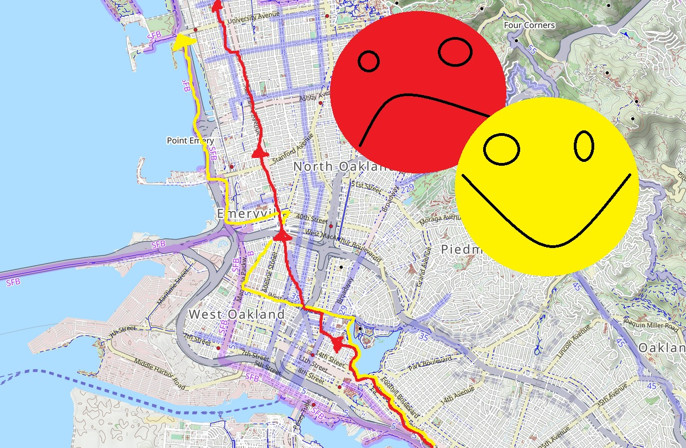
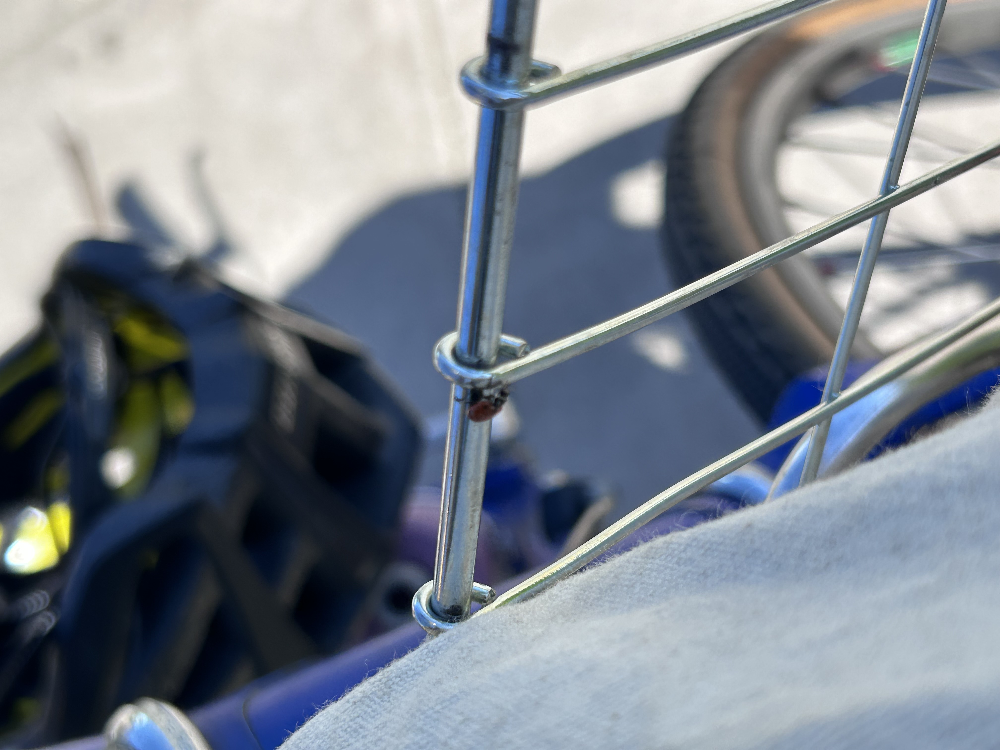
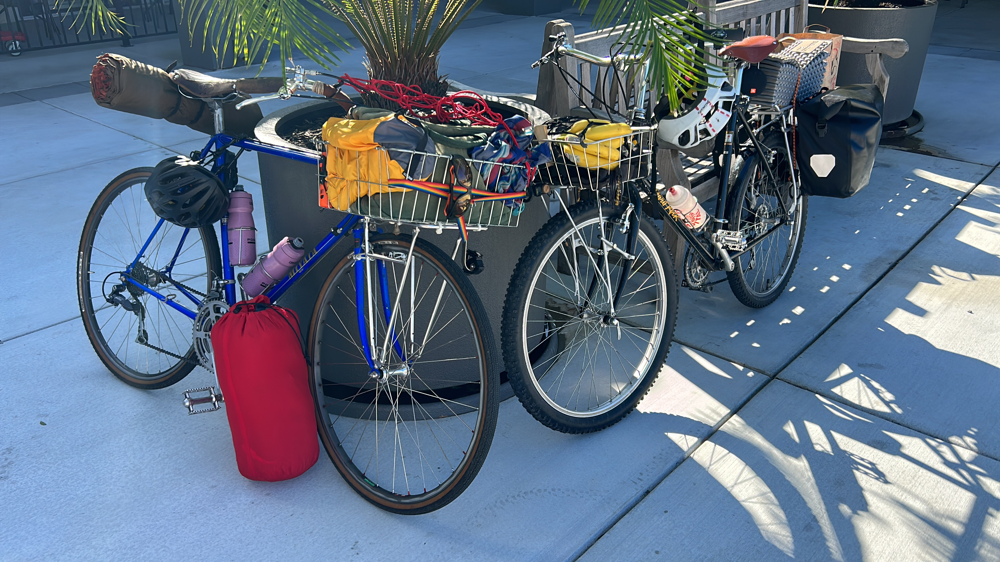
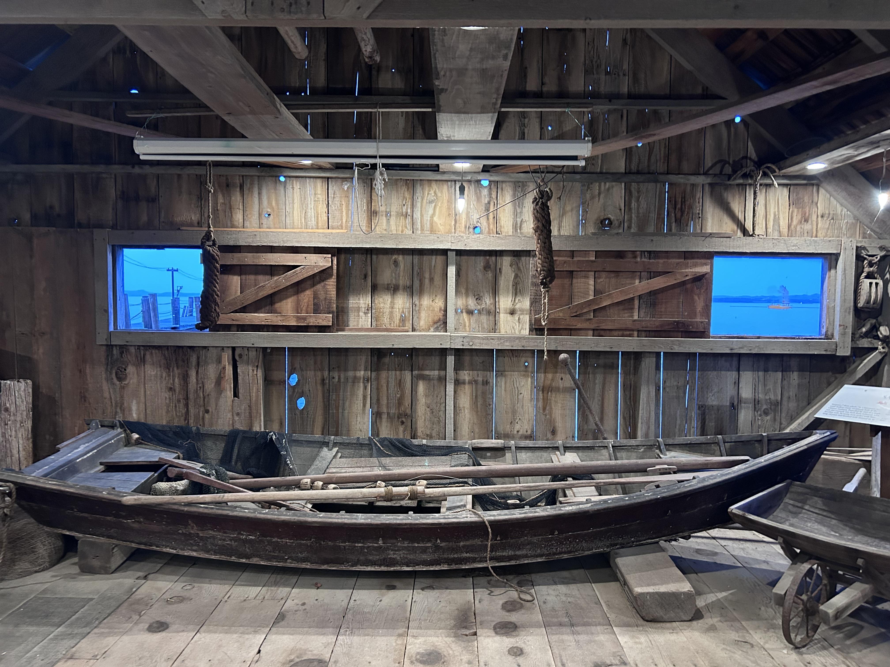
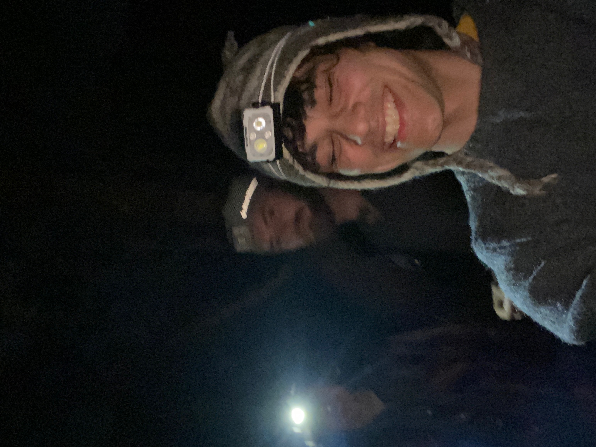

Sean and Eldon are, as of writing this blog post, embarking on a tour across the United States. To see what they're up to and their route, check out their blog at SeanAndEldon.com!
The weekend before their big tour, Sean and Eldon planned on doing a mini tour to China Camp to test their bikes, their gear, and their kit. This would be low stakes compared to their first day, which was planned to be 90 miles. China camp, however, was just 35 miles and had the advantage of being a familiar ride. I got myself invited one day while helping them build their bikes. Yippee! Right in time to try out my 'new' Miyata 1000 which was almost camping ready - I was rocking a front basket, but it was sturdily supported and I was determined to make it work... So I did.
Unfortunately, Sean's bike wasn't ready in time for this tour. His wheels were in queue to be built by Guy over at Alameda Bicycle. We nearly canceled it but decided to go for fun instead of preparation. Sean still had his old "commuter" Hard Rock which was capable.
Sean offered to cook brekkie before the ride - rice, veggie sausage, and broccoli. Yum! Unfortunately, Sean wasn't the only one without an incomplete touring rig. Eldon's Goatlink was still in the mail and he decided to stick home and try and catch the Mailman and install it before we got too far into our ride. I was told that it wouldn't be an issue, Eldon is a fast rider. With one less stomach to feed (A high-capacity stomach, mind you) Sean and I had leftovers to bring for lunch.
We talked about family while we ate in his Grandparents home. He showed me a silly robot toy from his childhood that his family kept around. And we set off.
The rack handled it like a champ! Front heavy, but doable.
The route wasn't planned. We stopped by our shop to get a spare tube, then took East 12th The Lake. We rode San Pablo to Berkeley and hooked onto the Bay Trail. This wasn't too bad if not for the awful stretch of San Pablo. Seriously, San Pablo sucks to bike on. I mentioned I had heard that there was a plan to put a bike lane on San Pablo and Sean told me he'd heard it would never happen. We took up a whole lane when we could, but some stretches required side-walk riding. Lots of waving and 'Sorry!'s.
On a recent ride to San Rafael, I avoided this stretch as much as I could. I'll write about this in another post, but I went down West Grand and took a right onto Peralta St. then linked onto Adeline. Left onto 40th St, up and over the bridge, past Ikea onto Shellmound and then followed the Bay Trail signs.
Red = Bad time on San Pablo w/ Sean
Yellow = Good Time, but more complicated
Once we were off San Pablo and onto side-roads, we had a better time. We saw a child riding with foam hulk hands on - A sign I could relax after the stressful ride next to speeding cars. We made it to the bulb and met a dog named Arrow. Sean chatted with Arrows owners for a bit and I noticed a lady bug on my basket. Good luck to me!
The Bay Trail was nice - this was my first time. I was ringing my lil bell a bunch and trying to be as gentle while passing as I could. Some people pass crazy on that path! Mixed-mode paths aren't a place for strava highscores, dude.
We continued North through Albany, passed El Cerito and into Richmond. We weaved around the roads, as anyone who's taken the path will be familiar with. Lefts and Rights abound, but all safe and clearly marked turns. The only issue were a few railroad track crossings. Watch out! We made it up to the Richmond Bridge and finally got word that Eldon was leaving his home. Cool views from the bridge. It's certainly a unique experience to see Oakland and San Francisco so far away. It was the furthest I had ever biked from home and filled me with a feeling of being a kid and wandering further from home than you ever had before, seeing something new and unfamiliar. Despite my fear of heights and discomfort with bridges, I felt safe.
We made it safely across, then ate our lunches next to Marin Rod & Gun Club.
The next bit of the ride kinda sucked, too. We continued on the "Bay trail" but it was shoulderless Sharrow riding like San Pablo. Blegh. We made it onto a path for a bit, but it was over all too quick and we were spat back onto the road. We survived and headed to Trader Joes for a re-up on snacks and for Dinner. I got nanners, coconut water, and burritos. Sean got a 6 pack and burritos, too. Then Eldon showed up! His phone died and didn't have a wallet, so we threw him a few bucks for shopping. I can't remember what he got...
Sean and my bike chillin outside tjs
We rode the last 7 miles quick. We were just ready to sit down. The route was mostly in a dedicated bike lane - there weren't even that many cars parked in our lane! Yay! The stretches of sharrow riding sucked as always, but we were just ready to be done. We climbed the last stretch and suddenly were in China Camp. We rode the winding rode into the camp zone and reserved Bike or Hike Campsite 2. Try and snag this one if you can!
After dropping of our luggage and snacking, we rode off to the pier to sit above to water. We chatted about ropes and knots (there was a pile of mossy net behind a fence) and appreciated the beauty in which we were surrounded.

Eldon and I at the end of the dock. The header image was taken here.
Right next to the dock was a little building with an open door. We peaked inside to find a museum - one which weren't expecting. Sean and Eldon had been to China Camp before, but were surprised to find something unfamiliar. It documented the life of the Chinese immigrants for whom China Camp is named for - originally shrimp harvesters, they faced harsh conditions, low income, and legislative discrimination. The museum documents their lifestyle and adversity they were forced to deal with.
Museums are often in cold, sanitary conditions which feel academic and far removed from the subject matter. This museum, however, was alive and real. Whoever put this museum together made sure of that. In windows, there were prints of shrimp boats such that they seemed to be floating out in the Bay. Ropes hung from the ceiling and faces of families were printed onto boxes and lumber. This museum, though not the main attraction for our group, was a highlight. We walked and read until the sun was firmly under the horizon and we were left to ride the twilight.

Rat Rock during high tide.
We rode back with appreciation for the adversity faced and the beautiful land we were on. We weaved with dancing headlights through the winding road back to camp, listening to the gentle rumble of our tires on the pavement. We heard laughter from a picnic spot and coyotes chirping. I heard a car and looked over my shoulder out of instinct and yelled and Sean and Eldon to stop immediately
"Guys, look at the moon!"
I had never seen the moon look so big, and Sean and Eldon said the same. It was giant! Not only was it large, it was a deep orange color. None of us had heard anything of a Blood Moon or other lunar event. We tried to take photos but it wasn't any good, so we just sat and admired yet another beauty of our day.
We made a fire under the warm orange moonlight and cooked our dinner. Eldon set up out tent (we were to be sleeping under the same tarp - I brought a hammock but the trees were much too small to support weight). When we all went to bed, we heard more coyote chirping. I asked if we should be worried. Sean assured me "everything is fine, they're just happy!"
I woke up to loud banging and snarls. I'll never forget it! Something was fighting in the middle of the camp. I woke up Sean, then Eldon. Suddenly the noises stopped and we sat there in silence. My pounding heartbeat carried me to a reluctant sleep. I had about 5 sleep paralysis dreams and woke up yelling. Sorry, guys!
We woke up again to something much closer to us. Again, I woke everyone up. It was a damn raccoon breaking into our locker! He made a mess of Eldon's food, but only took one protein peanut butter cookie bar. He wasn't interested in the jerky or burritos, just the sweets.
I hadn't slept a wink but the morning was cold enough to get me out of my sleeping bag and onto making a fire. By the time the fire started, everyone was up and talking about the crazy night. We found scattered, unopened food and a paw-print on Eldon's Ortlieb. We were out of the camp by 10:00.

Coffee was the name of the game after our sleep-lacking night.
Sean got a text from Alameda Bicycle - His wheels were ready! With excitement for tinkering, we headed off.


The ride home was uneventful at first. The bridge was alright, though much slower. The flow of cars head towards you, creating an artificial headwind. It wasn't much of a bother as we got it over with early into the ride.
We ran into Sean's mamma in Richmond after a series of wrong-turns. What a coincidence! We rode with her for a while and chatted about our wild night. We parted ways a few miles down the bay trail. Eldon parted not too soon after, and Sean and I decided to head to AB and pick up his wheels so he could finish up his touring rig.
We took BART back, happy to sit and chat. We went to Alameda Bicycle, picked up his custom wheels and rode them back to the shop. I left him to work on his bike and went home to take a shower and to tell my girlfriend all about my adventures.